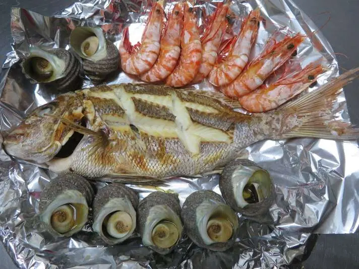
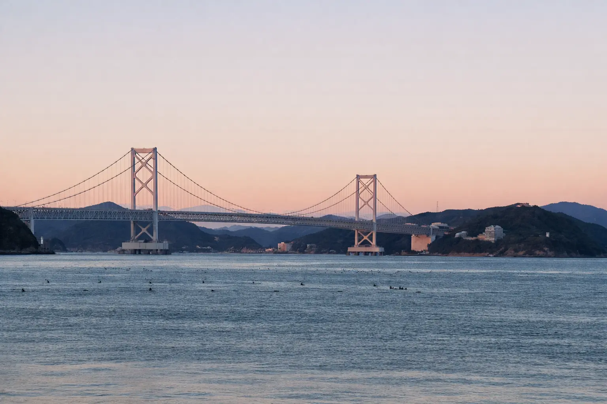
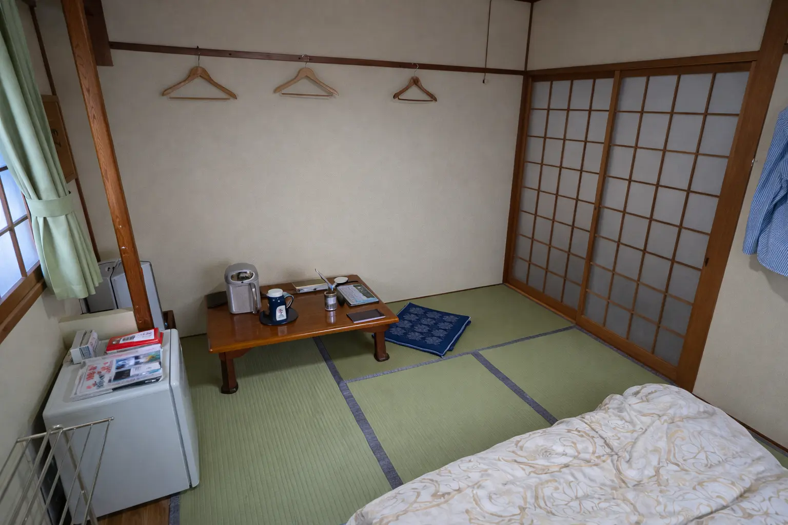
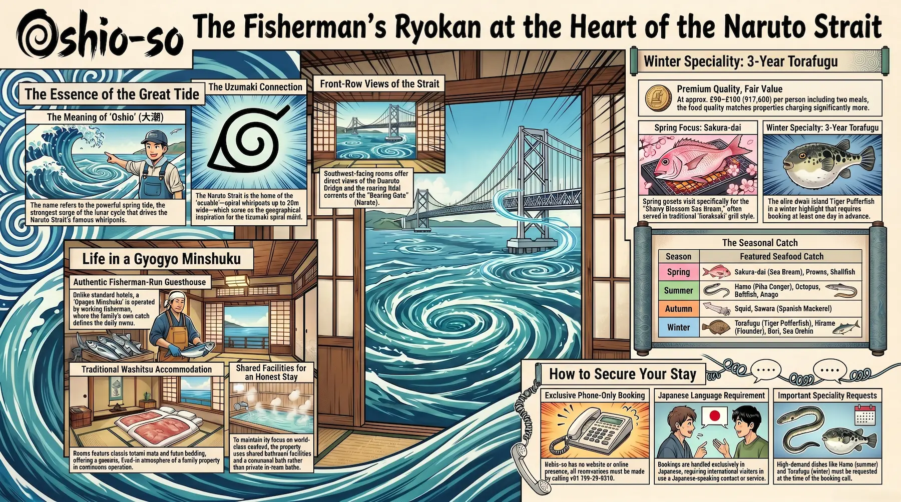
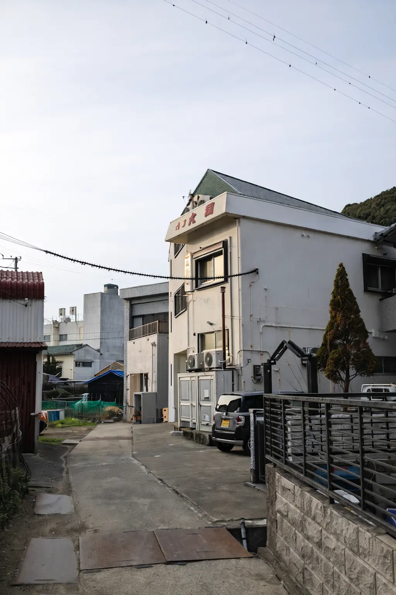
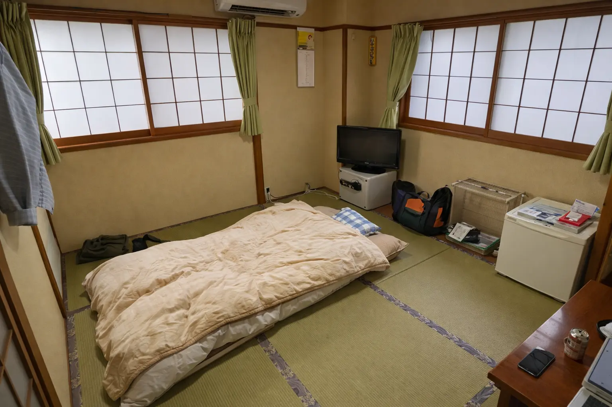
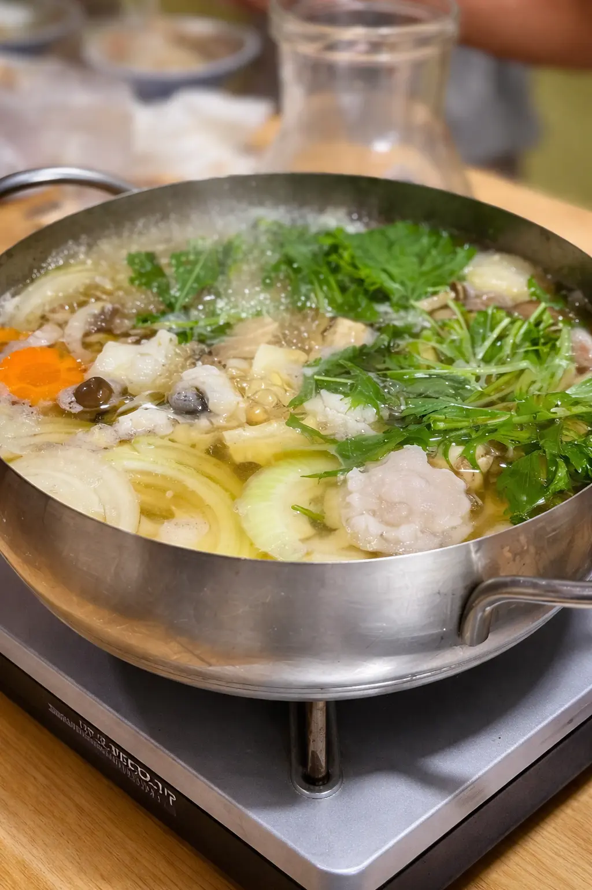
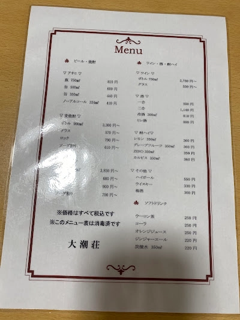
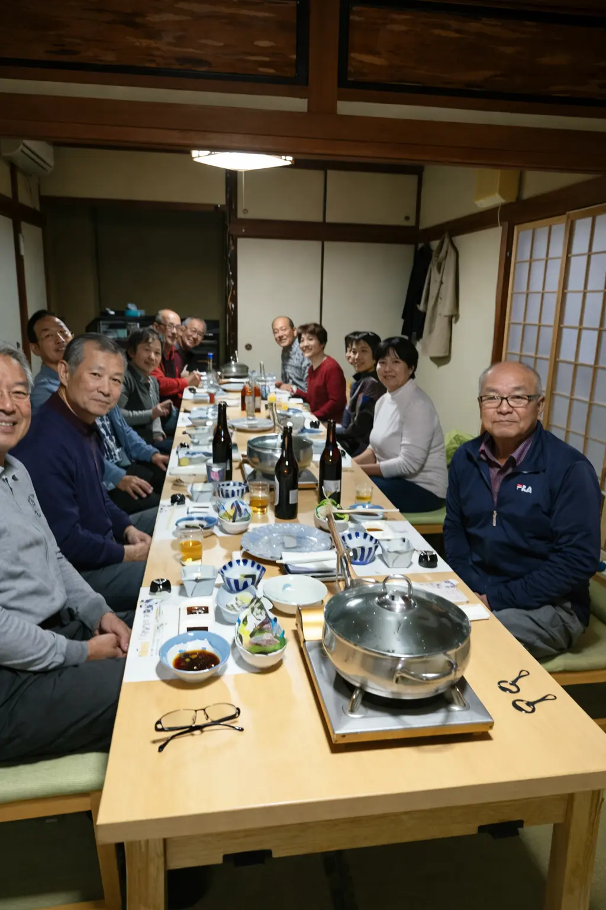
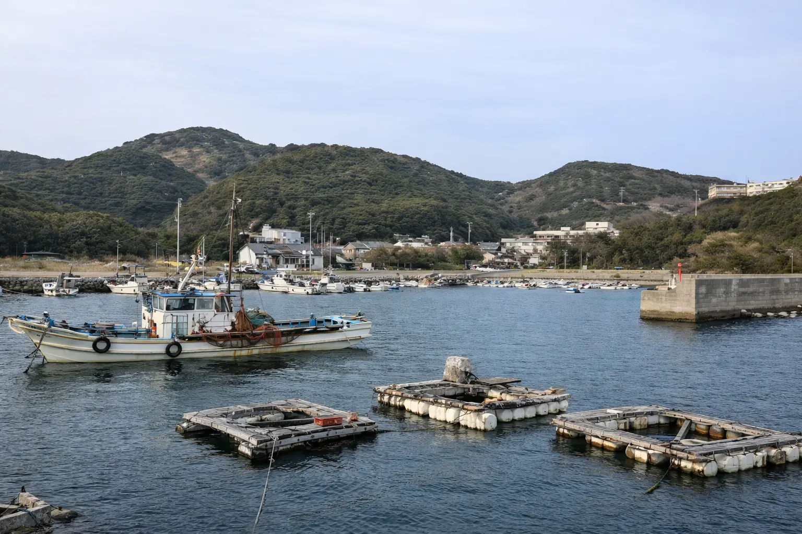

The name is straightforward about where you are. Oshio (大潮) means spring tide — the most powerful tidal surge of the lunar cycle, when the alignment of sun and moon drives the water through the Naruto Strait with unusual force. At Oshio-so 大潮荘, sitting at 892 Anaga on the southern tip of Awaji Island, those tides are not decorative. The strait visible from the building's windows is one of the fastest-moving tidal bodies in the world, producing the uzushio whirlpools that reach up to twenty meters across at their seasonal peak. This is a fisherman-run minshuku built in the place where the tide is the organizing fact of daily life — the fish come from it, the name of the house describes it, and the view outside the window is defined by it. Oshio-so has no website. It takes no online booking. It is, in the fullest sense, exactly what it appears to be.
The Minshuku: A Fisherman's House at the Edge of the Strait
Oshio-so is a gyogyo minshuku — a fisherman's guesthouse — the form of Japanese accommodation in which the operators are working fishermen and the food served to guests comes from the family's own catch. This is not a marketing category but a practical description of how the kitchen is supplied: what arrives at the table was in the surrounding water until recently, sourced from Awaji Island's fishing grounds and the productive tidal channel of the Naruto Strait. The Awajishima Kanko tourism guide lists the property concisely on this point: a fishing minshuku offering seasonal fresh-catch fish, with the menu shifting across the year according to what the sea provides.

The seasonal calendar follows the actual catch cycle of this stretch of coast. Spring brings sakura-dai (cherry blossom sea bream), prawns, and shellfish. Summer delivers hamo (pike conger eel), octopus, tachiuo (beltfish), and anago (conger eel). Autumn brings squid, matsutake mushroom accompaniments, and sawara (Spanish mackerel). Winter is the season of hirame (flounder), buri (yellowtail), fugu, kawahagi (filefish), sea cucumber, and sea urchin. Hamo and the three-year-aged Awaji Island tiger pufferfish are handled as specialty items requiring advance notice — the property's listing notes these must be booked by the previous day at the latest.
What the minshuku format does not include is the amenity range associated with a ryokan or resort. There is no lobby in the resort sense, no in-room private bath, and no multi-venue dining program. The rooms are traditional tatami washitsu with shared bathroom facilities — standard for this accommodation category. The building is not new, and the atmosphere is that of a family home that has been receiving guests for many years rather than a purpose-built hospitality facility. For guests whose primary purpose is the food and the coastal setting, this is the correct trade-off. For guests who prioritize facility range and material modernity, the larger ryokan properties in the Anaga area will be a better fit.
The Naruto Strait Connection: Oshio, Uzushio, and the Uzumaki Geography
The Naruto Strait, which separates Awaji Island from the Tokushima coast of Shikoku, is one of the most powerful tidal channels in the world. The difference in sea level between the Seto Inland Sea and the Pacific Ocean drives enormous volumes of water through this narrow passage on every tidal cycle, generating the uzushio whirlpools — spiral vortices reaching up to twenty meters in diameter at the spring and autumn equinox tides. The name of the minshuku, Oshio-so, refers directly to those extreme tidal moments: oshio (大潮) is the Japanese term for spring tide, the strongest surge of the lunar cycle, when the whirlpools reach their maximum size and the water moves fastest past the Anaga hillside where the property stands.
For visitors drawn to this part of Japan through the Naruto manga, the underlying geography is worth understanding clearly. The city of Naruto on the Tokushima coast, visible from Oshio-so's windows across the strait, shares its name — naruto (鳴門), "roaring gate" — with the tidal sound of that same passage. The spiral motif at the center of Naruto Uzumaki's visual identity, the uzumaki (渦巻き) pattern, is the same spiral as the whirlpools themselves. From Oshio-so, the Onaruto Bridge is directly visible, and on high-tide days the current is audible at the waterfront below. The minshuku's name and its location are both, in different ways, expressions of the same tidal fact that connects this coastline to the manga geography.
Location: 892 Anaga, the Southern Tip of Awaji Island

Oshio-so's address places it at 892 Anaga, Minamiawaji-shi — the southernmost inhabited area of Awaji Island, a small coastal settlement looking directly across the Naruto Strait toward Tokushima Prefecture. The Awajishima Minami Interchange of the Kobe-Awaji-Naruto Expressway is approximately 900 meters away — about fourteen minutes on foot or three minutes by car — making the property unusually accessible from the expressway despite being in an area with no commercial infrastructure nearby. There are no convenience stores within easy walking distance, and the nearest concentration of services is in Fukura, a few kilometers to the west.
The surrounding area's attractions are compact and accessible by car. The Onaruto Bridge and its Uzu-no-Michi glass-floor walkway — suspended 45 meters above the active whirlpools — is approximately ten minutes away. The Michi-no-Eki Uzushio roadside station, at the tip of the cape with panoramic views of the strait, is in the same vicinity. The Uzu no Oka Great Onaruto Bridge Memorial Museum, with exhibits on the whirlpool mechanism and local produce from the area, is also within this radius. The Otsuka Art Museum in Naruto — which houses the world's only permanent collection of full-size ceramic reproductions of Western masterworks — is approximately fifteen minutes by car across the bridge into Tokushima Prefecture. For guests arriving from Kobe, the expressway south along Awaji Island takes approximately 90 minutes from central Kobe. From Tokushima by car via the Onaruto Bridge, the journey is approximately 35 minutes.
The Rooms: Tatami, Strait Views, and the Character of Age
Oshio-so's rooms are traditional Japanese-style tatami washitsu, with the southwest-facing orientation toward the Naruto Strait that characterizes the area's best-positioned accommodation. Reviewers who have stayed note that the sea-facing rooms look directly onto the strait, with the Onaruto Bridge visible in the distance and the light changing across the water through the day. Bathroom facilities are shared — standard for a minshuku of this scale. Room sizes are consistent with the traditional Japanese country inn format: sufficient for futon bedding with the room's character defined by the tatami and the view rather than the fittings. The building itself is older and carries the lived-in quality of a family property in continuous operation for many years. This is not a recently renovated facility; the aesthetic is one of genuine age rather than designed rusticity, and guests should approach it as such.

Dining: The Live-Catch Table
Dinner at Oshio-so is not incidental to the stay — it is the organizing purpose of the entire experience. As a gyogyo minshuku, the kitchen is supplied by the operators' own fishing and by the day's catch from the surrounding Awaji Island waters, which means the menu is genuinely seasonal and genuinely variable. Tabelog reviewers who return annually describe the April sea bream course — centered on horakuyaki grill preparation and a sashimi platter that prominently features kawahagi with liver alongside the sea bream fillets — as the reason they come back. The October catch visits the same reviewer under a different seasonal composition. The winter three-year-aged Awaji Island tiger pufferfish course, available from November through February with advance booking, is cited as a separately worth-making destination in its own right.
Dinner is served privately per group — each group has its own table and timing. Breakfast is Japanese-style and included in the standard plan. The hamo and torafugu specialties require reservation by the previous day at minimum, and availability is limited; guests with a specific seasonal dish in mind must communicate this when making the booking call. The Jalan listing prices plans from ¥35,200 for two guests with dinner and breakfast, and Tabelog reviewers place individual dinner costs in the ¥8,000–¥14,999 per person range depending on the course and season. The value is in the quality and freshness of the ingredient rather than in preparation complexity — what Oshio-so serves is simply very fresh fish from a very productive stretch of sea, cooked in the ways that the ingredient deserves.
General Facilities
Oshio-so's facility profile is that of a small family-operated minshuku: free parking on-site, shared bathroom facilities, and the basic comforts of a traditional tatami guesthouse. A shared guest bath is available on the premises and can be booked on a sign-up board — one reviewer notes that the bath was fully occupied for the two hours before dinner during their stay, so timing should be factored in. The property does not operate a bar, café, or additional commercial services beyond the meal structure. Check-in is at 15:00 and check-out at 09:00. The access road from the Awajishima Minami Interchange includes a hairpin curve on approach — take the second left after the interchange exit, and the minshuku sign appears on the right side of the road after a short distance.
Cleanliness
The cleanliness record at Oshio-so across review platforms is positive for a property of this type. Jalan's reviewed categories rate cleanliness favorably among guests who have stayed, and Tabelog reviewers do not raise hygiene or maintenance concerns. The appropriate context is that this is an older building in continuous family operation: the standard of maintenance is that of a well-kept traditional property rather than a recently constructed facility. Guests who approach Oshio-so as a fisherman's minshuku — which it is, by every measure — consistently report satisfactory conditions; guests whose expectations are calibrated to ryokan or hotel norms may encounter a gap in certain areas, particularly the shared facilities.

Value
Oshio-so offers strong value within the category it occupies. At approximately ¥17,600 per person per night with dinner and breakfast — derived from the Jalan listing price of ¥35,200 for two guests — it delivers live-catch Awaji Island seafood sourced from the same productive waters as properties charging considerably more, at a price that reflects the minshuku format's lower structural overhead rather than any reduction in ingredient quality. The Tabelog review record, with food scores in the 3.7–3.9 range and specific repeat visits for the seasonal specialties, indicates that the kitchen delivers consistently above what the price tier would normally suggest. The value trade-off is straightforwardly in the facility dimension: shared bathrooms, older building, no amenity range. For guests traveling specifically for the live-catch cuisine and the coastal position on the Naruto Strait, the proposition is clear and favorable.
The practical constraint for international visitors is the complete absence of online booking infrastructure. Oshio-so has no website and accepts reservations only by telephone in Japanese. This is the most significant barrier for international travel to the property, and it requires either Japanese-language capability or a Japanese-speaking contact who can complete the reservation call on the guest's behalf.
Practical Information
- Check-in: 15:00 Check-out: 09:00
- Price Range: From ¥35,200 for 2 guests (dinner + breakfast included; ~¥17,600/person)
- Rooms: Traditional tatami (washitsu); sea-facing rooms available — request at booking; shared bathroom facilities
- Dining: Gyogyo minshuku live-catch seasonal cuisine — spring: sakura-dai, prawns, shellfish; summer: hamo, octopus, tachiuo, anago; autumn: squid, sawara; winter: hirame, buri, torafugu, kawahagi, sea urchin; hamo and 3-year torafugu require advance booking (previous day minimum)
- Reservation: Phone only — Japanese language; no website; no online booking
- Telephone: +81 799-39-0215
- Nearest expressway: Awajishima Minami IC ~900m / ~3 min by car; second left after IC exit, sign on right
- By car from Kobe: ~90 min via Akashi Kaikyo Bridge and Kobe-Awaji-Naruto Expressway
- By car from Tokushima: ~35 min via Onaruto Bridge
- By public transport: Ibi bus stop ~200m (2-min walk); bus routes from Fukura and Kobe direction
- Parking: Free on-site
- Languages: Japanese; no English-language booking support available from the property
Getting There
From Kobe / Osaka
- By car: Akashi Kaikyo Bridge → Kobe-Awaji-Naruto Expressway → Awajishima Minami IC → second left → ~3 min; total ~90 min from Sannomiya
- By bus: High-speed bus from JR Sannomiya toward Fukura; alight at Awajishima Minami IC stop or Ibi stop (~200m walk to property)
- Kansai International Airport: ~55 km north via Akashi Kaikyo Bridge
From Tokushima / Naruto
- By car: Onaruto Bridge → National Route 28 North → Awajishima Minami IC direction → ~35 min total
- By bus: Awaji Kotsu "Awaji-Tokushima Line" toward Fukura; exit Ibi stop (~200m walk)
- Tokushima Airport: ~27 km, ~31 min by car
- Onaruto Bridge / Uzu-no-Michi: ~10 min by car
Tips for Getting the Most Out of Your Stay
Reserve early and be specific on the phone. The phone call is the only point of contact with Oshio-so, and it is the moment to secure the seasonal specialty you came for. Hamo and three-year torafugu both require the previous day's advance booking at minimum, and availability during peak season is finite. Communicate the dish you want first, then the dates and room preferences.
Ask for the sea-facing rooms specifically. The tatami rooms with southwest-facing windows toward the Naruto Strait and the Onaruto Bridge are the ones worth having, and they are not the entire room inventory. Making the request explicit at booking costs nothing and significantly affects the experience.
Check the tide tables before arrival. The Naruto Strait's whirlpools are tidal and therefore predictable — the Japan Coast Guard publishes tide predictions publicly. The largest uzushio occur at the spring tide phase, and timing a morning or late afternoon hour at the Ibi waterfront below the minshuku to coincide with the peak surge turns the strait from a pleasant view into something genuinely dramatic.
Walk to the Ibi harbor after dinner. The fishing harbor at Ibi — a short walk from the property — is the departure point for the whirlpool sightseeing cruises and the mooring ground for the boats that supplied your dinner. An evening visit, when the harbor is quiet and the water is dark, makes the connection between the sea and the table concrete in a way that the meal alone cannot.
Beyond Oshio-so: The Honest Assessment
Oshio-so is among the most unambiguously defined accommodation propositions available in this corner of Japan. It is a fisherman's minshuku: an older building, shared facilities, phone-only Japanese-language booking, no online presence to speak of, and a dinner table that consistently outperforms its price tier on the quality of the main ingredient. That last fact is the one that brings reviewers back annually — for the April sea bream, for the February pufferfish — rather than seeking a more comfortable alternative.
The honest assessment for international visitors is that the access barrier is real and should not be minimized. Without Japanese-language capability, Oshio-so is effectively unreachable by conventional booking means. There is no workaround. For visitors who can navigate that constraint — either personally or through a Japanese-speaking contact — what they find is a minshuku that has been feeding guests from the waters of the Naruto Strait for decades, unchanged in its essential character, with no concessions to international tourism marketing and no dilution of its central purpose. The fish, the tatami room, and the tide outside the window that named the house. That is the whole of it, and for the right traveler, it is enough.
Hotel Directory
Oshio-so · 大潮荘
Photo Gallery

Photo 1
Photo 2
Photo 3'">
Photo 4'">
Photo 5'">
Photo 6'">Reservations by Phone Only
Oshio-so has no website and does not use online booking platforms. All reservations are made directly by telephone in Japanese. Specialty seasonal dishes — hamo and three-year torafugu — must be requested at the time of booking.
Phone reservation in Japanese required. No English-language booking support available directly from the property.